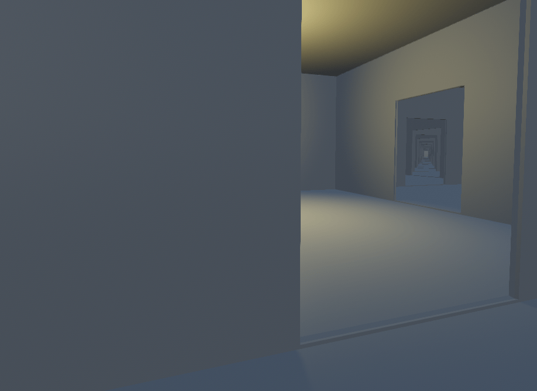
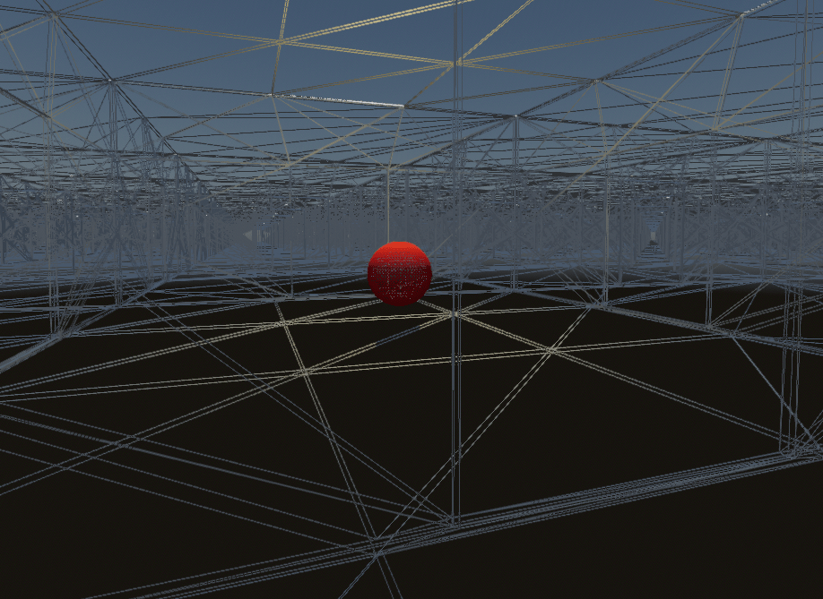
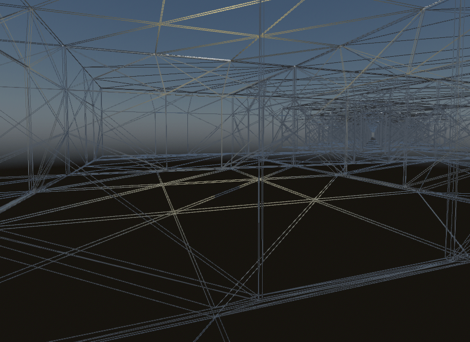

Occlusion culling
In a 3D rendering engine, occlusion culling is the process of performing hidden geometry removal.
On this page, you'll learn:
What are the advantages and pitfalls of occlusion culling.
How to set up occlusion culling in Godot.
Troubleshooting common issues with occlusion culling.
See also
You can see how occlusion culling works in action using the Occlusion Culling and Mesh LOD demo project.
Why use occlusion culling
In this example scene with hundreds of rooms stacked next to each other, a dynamic object (red sphere) is hidden behind the wall in the lit room (on the left of the door):

Example scene with an occlusion culling-friendly layout
With occlusion culling disabled, all the rooms behind the lit room have to be rendered. The dynamic object also has to be rendered:

Example scene with occlusion culling disabled (wireframe)
With occlusion culling enabled, only the rooms that are actually visible have to be rendered. The dynamic object is also occluded by the wall, and therefore no longer has to be rendered:

Example scene with occlusion culling enabled (wireframe)
Since the engine has less work to do (fewer vertices to render and fewer draw calls), performance will increase as long as there are enough occlusion culling opportunities in the scene. This means occlusion culling is most effective in indoor scenes, preferably with many smaller rooms instead of fewer larger rooms. Combine this with Mesh level of detail (LOD) and Visibility ranges (HLOD) to further improve performance gains.
Note
When using the Forward+ renderer, the engine already performs a depth prepass. This consists in rendering a depth-only version of the scene before rendering the scene's actual materials. This is used to ensure each opaque pixel is only shaded once, reducing the cost of overdraw significantly.
The greatest performance benefits can be observed when using the Mobile renderer, as it does not feature a depth prepass for performance reasons. As a result, occlusion culling will actively decrease shading overdraw with that renderer.
Nonetheless, even when using a depth prepass, there is still a noticeable benefit to occlusion culling in complex 3D scenes. However, in scenes with few occlusion culling opportunities, occlusion culling may not be worth the added setup and CPU usage.
How occlusion culling works in Godot
Note
"occluder" refers to the shape blocking the view, while "occludee" refers to the object being hidden.
In Godot, occlusion culling works by rasterizing the scene's occluder geometry to a low-resolution buffer on the CPU. This is done using the software raytracing library Embree.
The engine then uses this low-resolution buffer to test the occludee's AABB against the occluder shapes. The occludee's AABB must be fully occluded by the occluder shape to be culled.
As a result, smaller objects are more likely to be effectively culled than larger objects. Larger occluders (such as walls) also tend to be much more effective than smaller ones (such as decoration props).
Setting up occlusion culling
The first step to using occlusion culling is to enable the Rendering > Occlusion Culling > Use Occlusion Culling project setting. (Make sure the Advanced toggle is enabled in the Project Settings dialog to be able to see it.)
This project setting applies immediately, so you don't need to restart the editor.
After enabling the project setting, you still need to create some occluders. For performance reasons, the engine doesn't automatically use all visible geometry as a basis for occlusion culling. Instead, the engine requires a simplified representation of the scene with only static objects to be baked.
There are two ways to set up occluders in a scene:
Automatically baking occluders (recommended)
Note
Only MeshInstance3D nodes are currently taken into account in the occluder baking process. MultiMeshInstance3D, GPUParticles3D, CPUParticles3D and CSG nodes are not taken into account when baking occluders. If you wish those to be treated as occluders, you have to manually create occluder shapes that (roughly) match their geometry.
Since Godot 4.4, CSG nodes can be taken into account in the baking process if they are converted to a MeshInstance3D before baking occluders.
This restriction does not apply to occludees. Any node type that inherits from GeometryInstance3D can be occluded.
After enabling the occlusion culling project setting mentioned above, add an OccluderInstance3D node to the scene containing your 3D level.
Select the OccluderInstance3D node, then click Bake Occluders at the top of the 3D editor viewport. After baking, the OccluderInstance3D node will contain an Occluder3D resource that stores a simplified version of your level's geometry. This occluder geometry appears as purple wireframe lines in the 3D view (as long as View Gizmos is enabled in the Perspective menu). This geometry is then used to provide occlusion culling for both static and dynamic occludees.
After baking, you may notice that your dynamic objects (such as the player, enemies, etc…) are included in the baked mesh. To prevent this, set the Bake > Cull Mask property on the OccluderInstance3D to exclude certain visual layers from being baked.
For example, you can disable layer 2 on the cull mask, then configure your dynamic objects' MeshInstance3D nodes to be located on the visual layer 2 (instead of layer 1). To do so, select the MeshInstance3D node in question, then on the VisualInstance3D > Layers property, uncheck layer 1 then check layer 2. After configuring both cull mask and layers, bake occluders again by following the above process.
Manually placing occluders
This approach is more suited for specialized use cases, such as creating occlusion for MultiMeshInstance3D setups or CSG nodes (due to the aforementioned limitation).
After enabling the occlusion culling project setting mentioned above, add an OccluderInstance3D node to the scene containing your 3D level. Select the OccluderInstance3D node, then choose an occluder type to add in the Occluder property:
QuadOccluder3D (a single plane)
BoxOccluder3D (a cuboid)
SphereOccluder3D (a sphere-shaped occluder)
PolygonOccluder3D (a 2D polygon with as many points as you want)
There is also ArrayOccluder3D, whose points can't be modified in the editor but can be useful for procedural generation from a script.
Previewing occlusion culling
You can enable a debug draw mode to preview what the occlusion culling is actually "seeing". In the top-left corner of the 3D editor viewport, click the Perspective button (or Orthogonal depending on your current camera mode), then choose Display Advanced… > Occlusion Culling Buffer. This will display the low-resolution buffer that is used by the engine for occlusion culling.
In the same menu, you can also enable View Information and View Frame Time to view the number of draw calls and rendered primitives (vertices + indices) in the bottom-right corner, along with the number of frames per second rendered in the top-right corner.
If you toggle occlusion culling in the project settings while this information is displayed, you can see how much occlusion culling improves performance in your scene. Note that the performance benefit highly depends on the 3D editor camera's view angle, as occlusion culling is only effective if there are occluders in front of the camera.
To toggle occlusion culling at runtime, set use_occlusion_culling on the
root viewport as follows:
get_tree().root.use_occlusion_culling = true
GetTree().Root.UseOcclusionCulling = true;
Toggling occlusion culling at runtime is useful to compare performance on a running project.
Performance considerations
Design your levels to take advantage of occlusion culling
This is the most important guideline. A good level design is not just about what the gameplay demands; it should also be built with occlusion in mind.
For indoor environments, add opaque walls to "break" the line of sight at regular intervals and ensure not too much of the scene can be seen at once.
For large open scenes, use a pyramid-like structure for the terrain's elevation when possible. This provides the greatest culling opportunities compared to any other terrain shape.
Avoid moving OccluderInstance3D nodes during gameplay
This includes moving the parents of OccluderInstance3D nodes, as this will cause the nodes themselves to move in global space, therefore requiring the BVH to be rebuilt.
Toggling an OccluderInstance3D's visibility (or one of its parents' visibility) is not as expensive, as the update only needs to happen once (rather than continuously).
For example, if you have a sliding or rotating door, you can make the OccluderInstance3D node not be a child of the door itself (so that the occluder never moves), but you can hide the OccluderInstance3D visibility once the door starts opening. You can then reshow the OccluderInstance3D once the door is fully closed.
If you absolutely have to move an OccluderInstance3D node during gameplay, use a primitive Occluder3D shape for it instead of a complex baked shape.
Use the simplest possible occluder shapes
If you notice low performance or stuttering in complex 3D scenes, it may mean that the CPU is overloaded as a result of rendering detailed occluders. Select the OccluderInstance3D node, increase the Bake > Simplification property then bake occluders again.
Remember to keep the simplification value reasonable. Values that are too high for the level's geometry may cause incorrect occlusion culling to occur, as in My occludee is being culled when it shouldn't be.
If this still doesn't lead to low enough CPU usage, you can try adjusting the Rendering > Occlusion Culling > BVH Build Quality project setting and/or decreasing Rendering > Occlusion Culling > Occlusion Rays Per Thread. You'll need to enable the Advanced toggle in the Project Settings dialog to see those settings.
Troubleshooting
My occludee isn't being culled when it should be
On the occluder side:
First, double-check that the Bake > Cull Mask property in the OccluderInstance3D is set to allow baking the meshes you'd like. The visibility layer of the MeshInstance3D nodes must be present within the cull mask for the mesh to be included in the bake.
Also note that occluder baking only takes meshes with opaque materials into account. Surfaces will transparent materials will not be included in the bake, even if the texture applied on them is fully opaque.
Lastly, remember that MultiMeshInstance3D, GPUParticles3D, CPUParticles3D and CSG nodes are not taken into account when baking occluders. As a workaround, you can add OccluderInstance3D nodes for those manually.
On the occludee side:
Make sure Extra Cull Margin is set as low as possible (it should usually be
0.0), and that Ignore Occlusion Culling is disabled in the object's
GeometryInstance3D section.
Also, check the AABB's size (which is represented by an orange box when selecting the node). This axis-aligned bounding box must be fully occluded by the occluder shapes for the occludee to be hidden.
My occludee is being culled when it shouldn't be
The most likely cause for this is that objects that were included in the occluder bake have been moved after baking occluders. For instance, this can occur when moving your level geometry around or rearranging its layout. To fix this, select the OccluderInstance3D node and bake occluders again.
This can also happen because dynamic objects were included in the bake, even though they shouldn't be. Use the occlusion culling debug draw mode to look for occluder shapes that shouldn't be present, then adjust the bake cull mask accordingly.
The last possible cause for this is overly aggressive mesh simplification during the occluder baking process. Select the OccluderInstance3D node, decrease the Bake > Simplification property then bake occluders again.
As a last resort, you can enable the Ignore Occlusion Culling property on the occludee. This will negate the performance improvements of occlusion culling for that object, but it makes sense to do this for objects that will never be culled (such as a first-person view model).